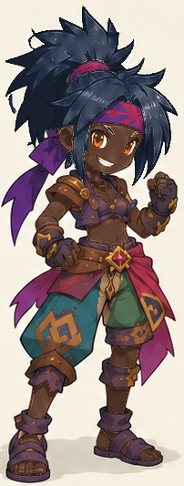

Comparaison au même cadrage, à la résolution source. Le canon est exactement le recadrage V2. Le rendu personnalisé utilise les cinq masques visibles ; aucun visage, cheveu ou équipement n’est reconstruit dans ces rendus.
Palette de preuve : peau #65412F, cheveux #222E45, pantalon gauche #356C72, droit #526E52, panneau central #B48760. L’affectation des trois zones textiles reste à valider.



Les résultats techniques ne valent pas validation esthétique. Les neuf études de visage et de coiffure restent des références : aucune variante de forme n’est livrée comme composable. Les équipements restent intégrés au dessin et ne peuvent pas être retirés.
Ouvrir l’atelier · Rapport automatisé · État ART-01 à ART-12